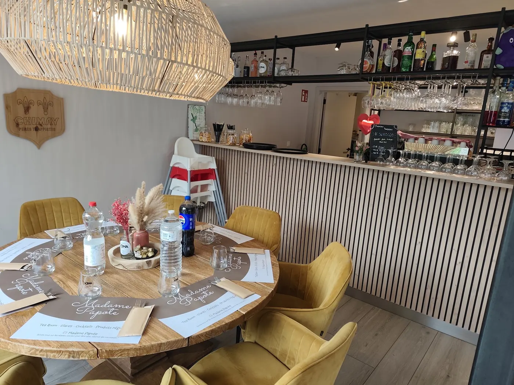
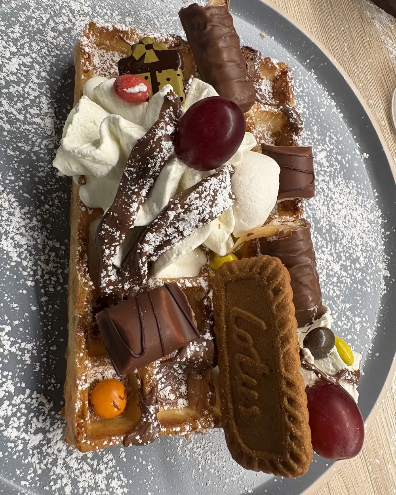
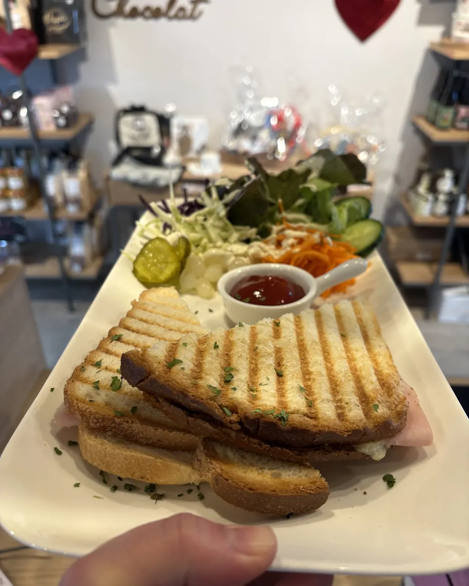
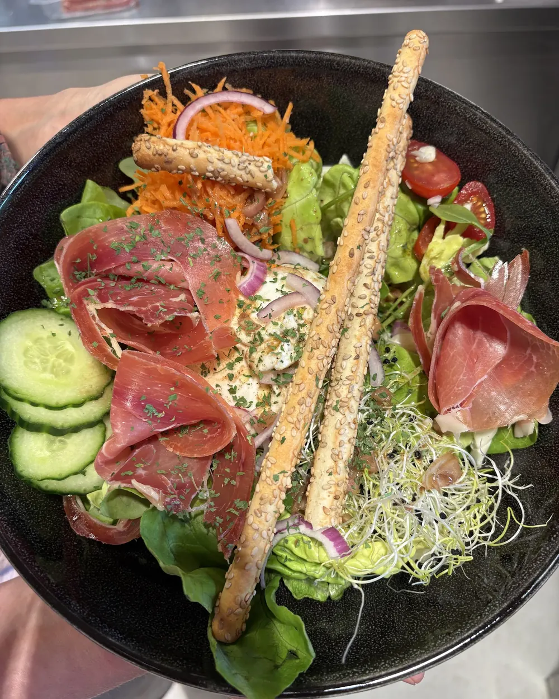
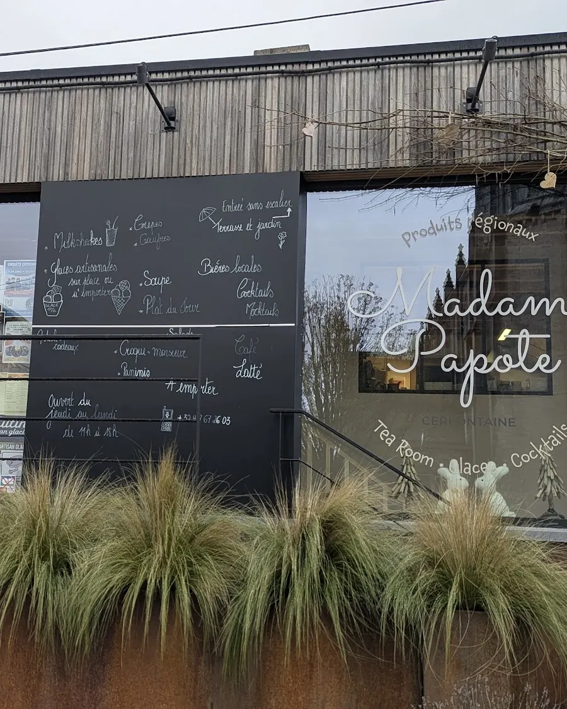
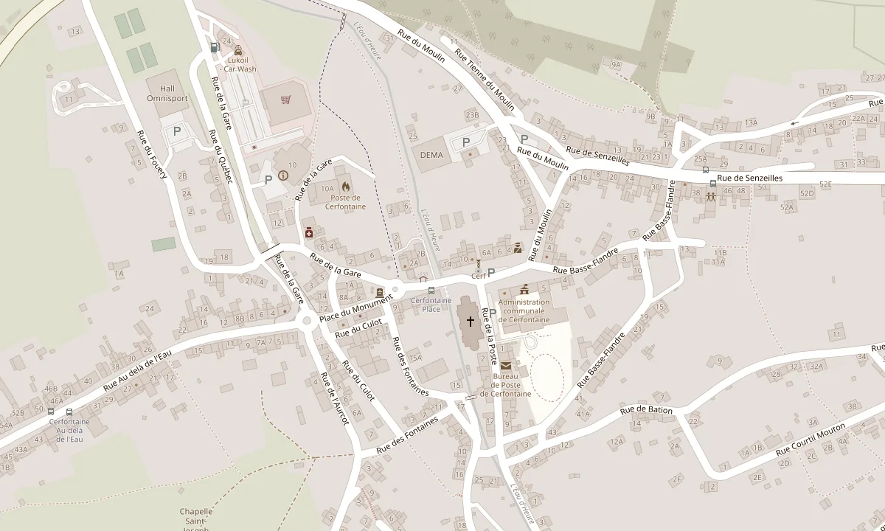

Sandwicherie · Tea-room
Madame Papote
Crêpes, gaufres, glaces artisanales, croques et plat du jour, sur la place de l'Église de Cerfontaine.
Du jeudi au lundi, 11 h – 18 h
4,9 sur 5 · 205 avis Google

Place de l'Église 14



une table vous attend
Réserver une table
Le jour, l'heure, le nombre de couverts : c'est fait en trente secondes.
ils en parlent
Ce que les clients en disent
Horaires
| lundi | 11 h – 18 h |
|---|---|
| mardi | fermé |
| mercredi | fermé (ouvert pendant les congés scolaires) |
| jeudi | 11 h – 18 h |
| vendredi | 11 h – 18 h |
| samedi | 11 h – 18 h |
| dimanche | 11 h – 18 h |

Itinéraire © OpenStreetMap